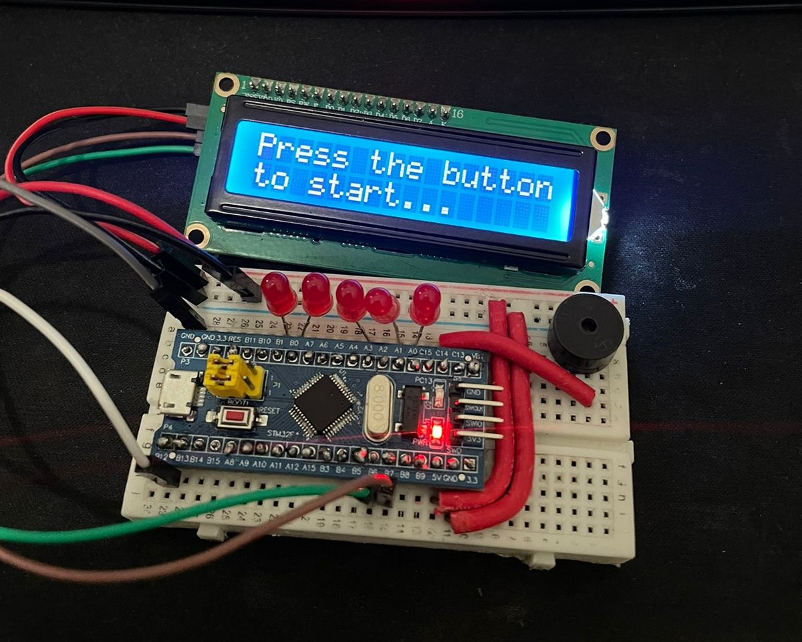
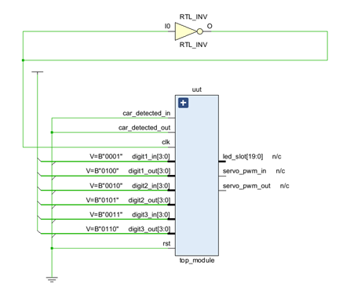
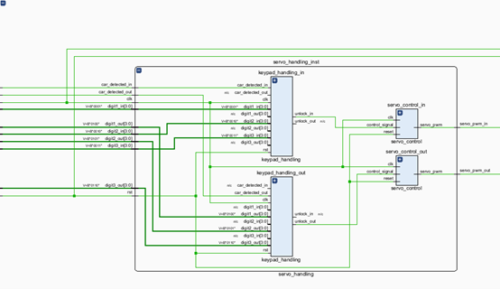
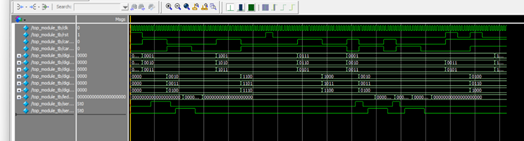
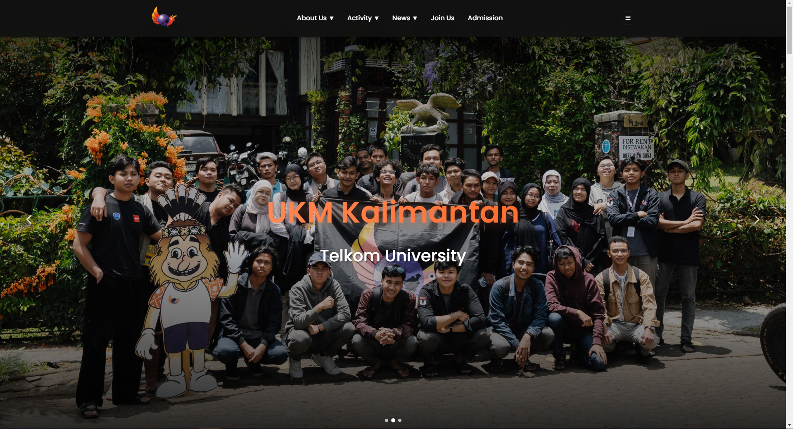
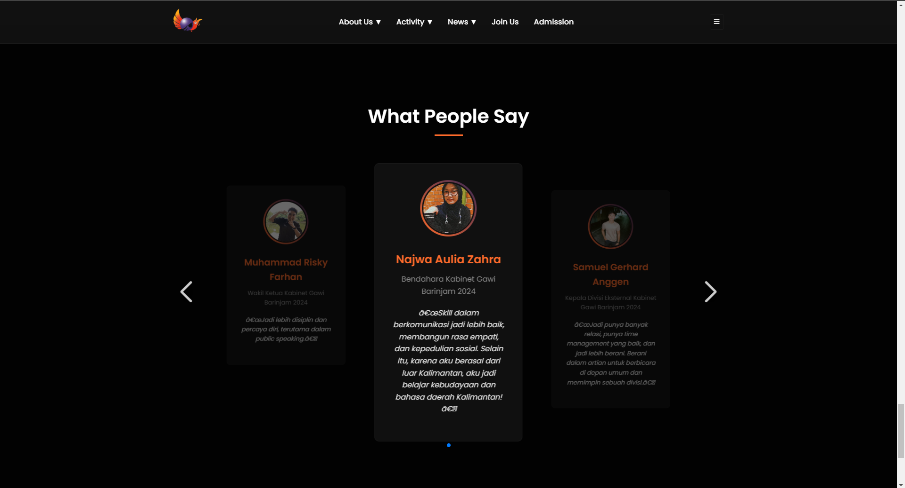

Web Development Projects

A web-based image gallery built using native HTML, CSS, and JavaScript. It dynamically fetches image names and directory structures, allowing seamless browsing of images. Additional features include image sharing and download functionality.
Gallery WebsiteReaction Time Game
This project aims to design and implement a reaction game using the Blue Pill microcontroller. The game features an interactive experience using LEDs and push buttons as the main interface.
View on GitHubSmart Parking System Verilog
  The "Smart Car Parking System" addresses urban parking challenges by combining modern technology with digital system design. This system incorporates motion sensors, keypads, servo motors, magnetic sensors, and LED indicators to streamline parking management. Its primary goal is to enhance parking efficiency, reduce time spent searching for slots, and improve security.
View on GitHubUKM Kalimantan Website
 A dynamic website that utilizes a database to store and manage cabinet member bios and photos. It supports content management for easier updates and information display.
UKM Kalimantan WebsiteHome Lab


I use Proxmox to host self-contained services, including Immich for self-hosted Google Photos, Navidrome as a personal music streaming server, and multiple websites like my gallery and the UKM Kalimantan website. These services run in containers and are securely made public using Cloudflared.
View on GitHubCloud Computing


This project demonstrates the effective use of containerization and orchestration with Kubernetes for deploying microservices-based applications. Using Minikube, we deployed and managed a microservices architecture locally without requiring extensive infrastructure. Docker ensures consistency across environments, while Kubernetes handles scalability and service management. Monitoring tools like Grafana and Prometheus provide real-time performance tracking, enhancing system stability. Security was improved through VPN access with Tailscale, and public accessibility was managed using Cloudflared. Future improvements could include integrating CI/CD pipelines for automated builds, testing, and deployment to streamline development and enhance system reliability.
View Final Report